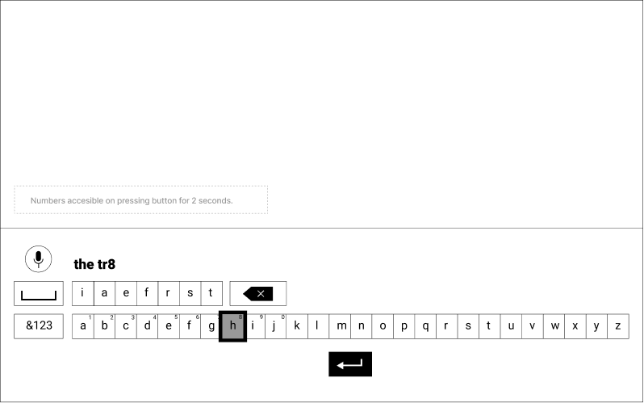
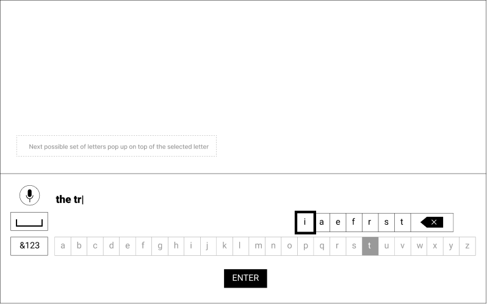
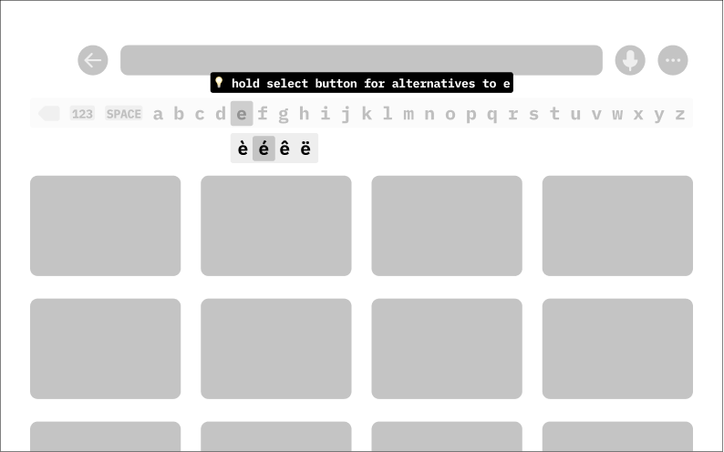

Typing on TV
predictive on-screen keyboard for OTT platforms
- Status: Ongoing; preparing for conference publication
- Supervisor: Dr Debayan Dhar, Asstistant Professor, IIT Guwahati
- Collaborators: Pranav Ashwin Ramesh, Shirsha Biswas
- Time Span: Aug 2021 (2 weeks); Jan 2022 - present
- Keywords:

Initial Brief
To identify problems faced while typing on Television using a remote and coming up with a solution that makes the experience better for the users.
Validate
- Mutual agreement.
- Checking online reviews on shopping websites.
- Asking our friends and family.
- User Survey: 73.8% said they face problems while typing on their TV.
Insights from Usage
Comparison between Android TV and Amazon Firestick
- Most of the keyboards follow the ABCDE format.
- The basic layout of the keyboard remains the same.
- Remotes have different features, but still have the same directional and select buttons.
- Google search allows cursor movement between typed in letters.
- Some applications have a separate number keyboard to enter codes and numbers.
User Survey
- Most used apps (which involve typing)?
- Problems faced while using the device to type?
- If and what they like about the existing model?
- What alternatives, to the remote, do they use?
Insights from the Surveys
Most used apps:
- Netflix
- Amazon Prime
Problems:
- Too Slow and frustrating process.
- Constant need to switch between screen and remote.
- Buttons on the remote are small making it difficult to read.
- Difficult to switch between remotes and devices.
- Lack of feedback, overshooting letters while navigating.
- Difficulty while entering languages other than English.
Alternatives:
- Voice search
- External keyboard
- Mobile apps
Field Study
User Observation
Tasks:
- Type in Username/password.
- Search for given movie titles on Netflix and Amazon.
Interview based on observation and CIT research methods
Questions:
- Introspection, likes, dislikes, preference.
- Use of alternatives, specific time they used it and the following experience.
Environment
Remote Control / Alternatives
Empathy Map
Identified 3 User Groups based on their Experience with Technology:
Homemaker
Student
Professional

Pros & Cons to finalise target group
Homemaker
.accordion-body, though the transition does limit overflow.
.accordion-body, though the transition does limit overflow.
Student
.accordion-body, though the transition does limit overflow.
.accordion-body, though the transition does limit overflow.
Professional
.accordion-body, though the transition does limit overflow.
.accordion-body, though the transition does limit overflow.
User Persona
Raymond Rajan, 42
Business Manager in Delhi, India.
Owns a Fire TV Stick.
Above average familiarity with technology.
Goals:
- To quickly and efficiently search the specific video they’re looking for.
- To enter his username and password while signing/logging in.
Behavioural Patterns:
- Types with one hand using right thumb.
- Does not look at the remote while typing.
- Sits in a relaxed position which changes on typing longer titles.
- Delighted on suggestions showing up.
TV Keyboard Experience:
- Youtube:
- Netflix:
- Prime Video:
"I don’t like typing on TV and often ask my son to do it for me."
Journey Map
Scenario: Raymond is searching for ‘Yeh Jawaani hai Deewani’ on Amazon Prime.
Key Insights
- Look forward to active search results to reduce typing.
- Dislike slow typing speed and lag in or lack of feedback.
- Lack of shortcuts decreases efficiency.
- Focus stays on the TV screen for most of the time and not on the remote.
- Most problems are faced while navigating through the characters.
Opportunity Areas
- Improve recommendation feature to reduce typing.
- Improve feedback to be clear to the user.
- Find possible shortcuts to increase efficiency.
- Devise possible layouts to improve the movement through characters.
Selecting an Opportunity Area
- Improve recommendation feature to reduce typing.
- Highlighting the most probable suggestions.
- Better placement.
- Increasing number of suggestions shown on screen.
- Improve feedback to be clear to the user.
- While selecting characters.
- Feedback on search bar on selecting a letter (to eliminate user double checking).
- Find possible shortcuts to increase efficiency.
- Hold button to move far right, left, up or down.
- Shortcuts for most used buttons and space/backspace etc.
- Tangible shortcuts for search/voice search etc. - icons/color codes.
- Devise possible layouts to improve the movement through characters.
- Keyboard layouts - no. of rows, coloumns, placement of characters.
- Dynamic, static.
- Moving cursor back and forth.
- 2 rows, one for letters, one for other characters (provision for using hold button navigation).
- Over all size, alignment on screen.
Redesigned Brief
To create a centralized keyboard for streaming applications to improve the experience of working professionals while navigating through the letters while typing on TV.
Ideation
- Using a touchpad on the remote (swipe, hold like on a laptop or PS5 controller).
- 8 directional buttons so can easily move diagonally.
- Dynamic virtual keyboard.
- Next possible letter gets bigger on screen.
- Point to type (like on a Nintendo Wii).
- Using gyros to increase interaction possibilities.
- Grip buttons on the back to help the single thumb, can be used by middle finger or the one on it’s side.
- Horizontal remote like a game controller, left side arrows, right side select button.
- Full word suggestions at the top of the keyboard like on the Google phone keyboard.
- Change from ‘clicking’ input to ‘holding’ input to increase navigational speed.
- Keyboard with 2 separate lines for consonants and keyboards.
- Remote with all letters on it.
- Touchscreen TV.
- Ringlike touchpad on remote (slide selection) and ringlike arrangement of letters on TV.
- Tangible backspace, space, clear, enter buttons.
- Remote app which can be accessed with QR code - embossed on the side of the TV.
Possible Ideas
Primary Ideas:
- Dynamic virtual keyboard.
- Using a touchpad on the remote (swipe, hold like on a laptop or PS5 controller).
- Tangible backspace, space, clear, enter buttons.
Secondary Ideas:
- Next possible letter gets bigger on screen.
- Grip buttons on the back to help the single thumb, can be used by middle finger or the one on it’s side.
- Ringlike touchpad on remote (slide selection) and ringlike arrangement of letters on TV.
Positives / Negatives
Dynamic Virtual Keyboard (Concept)
Initially, alphabets are shown in the order of their most likely possibility of being the first letter:
After selecting the first letter (here S), the order of the alphabets changes to show the most likely possibility of being the second letter in a word that starts with ‘S’ . The user selects ‘A’.
After selecting the second letter (here A), the order changes to show the most likely possibility of being the third letter in a word that starts with ‘SA’ . The user selects ‘B’.
After selecting the third letter (here B), the order changes to show the most likely possibility of being the fourth letter in a word that starts with ‘SAB’ . The user selects ‘Y’.
And it continues till the user has typed as per their requirement.
Iterations of the Concept
Initial idea of having predictions shown above the main keyboard.
Providing numbers on hold, plus switch button for numbers & special characters.
The whole keyboard layout changing every time might be too confusing for the user.
Bottom position won’t allow search results to be displayed.
Giving a backspace button in the predictive typing bar.
Numbers, backspace and space bar higlighted.
Too many letters in the predictive bar could act as a distraction.
A search query done with e instead of è would give the same results.